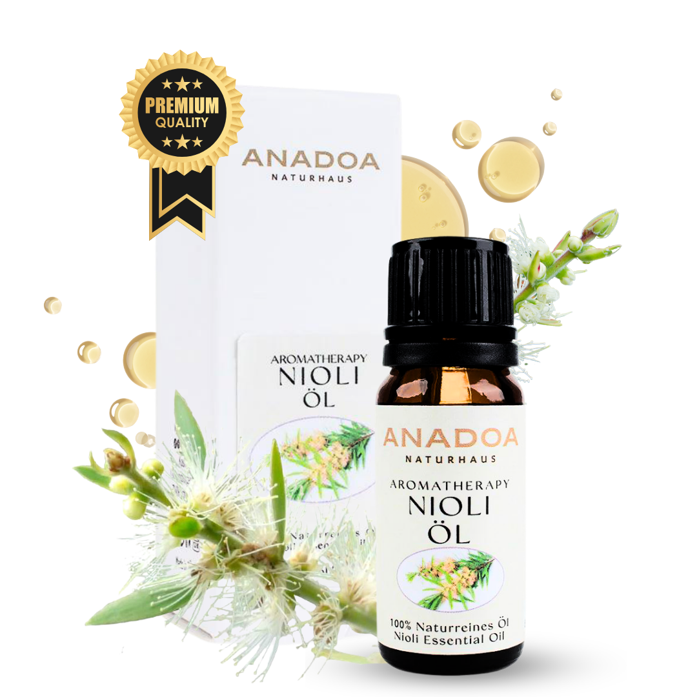

Was ist Niaouliöl?
Niaouliöl (Melaleuca quinquenervia) ist das stille Genie unter den ätherischen Ölen. Es steht oft im Schatten seines berühmten Bruders, dem Teebaumöl, übertrifft diesen aber in vielen Bereichen deutlich. Es riecht sehr frisch, klar, leicht süßlich und stark eukalyptusartig – ein Duft, der sofort suggeriert: 'Hier wird alles klinisch rein'.
In der französischen Aromamedizin (der strengsten der Welt) ist Niaouli das absolute Standard-Mittel gegen Virusinfektionen. Ob Lippenherpes, Gürtelrose oder eine anrollende Grippewelle – Niaouli aktiviert das Immunsystem und vernichtet Viren, ohne die Haut extrem zu reizen.
Wo und wie wird Niaouli geerntet?
Der Niaoulibaum wächst wild in Neukaledonien, Madagaskar und Teilen Australiens. Er liebt Sümpfe und Wasser. In Neukaledonien wird die Luft in Wäldern, in denen dieser Baum wächst, als so rein und gesundheitsfördernd beschrieben, dass Malaria dort kaum eine Chance hat.
Geerntet werden die immergrünen Blätter und kleinen Zweige. Die Ernte kann ganzjährig erfolgen, wobei die Ausbeute in feuchten Klimazonen besonders hoch ist.
Die Kunst der Destillation: Wie wird Niaouliöl hergestellt?
Das Öl wird durch Wasserdampfdestillation der frischen Blätter gewonnen. Oft wird es nach der Destillation nochmals rektifiziert (gereinigt), um bittere Stoffe zu entfernen.
Das fertige Öl ist wasserklar bis blassgelb. Es ist stark flüchtig und durchdringend frisch.
Biochemie: Die Wirkstoffe im Niaouliöl
Niaouli ist ein hochkomplexes Öl, das die besten Eigenschaften aus Eukalyptus und Teebaum vereint:
- 1,8-Cineol (50 - 60%): Der Stoff, der die Atemwege freimacht, stark antiviral wirkt und den frischen Duft liefert.
- Alpha-Pinen: Wirkt stark entzündungshemmend und raumluftreinigend.
- Viridiflorol (ein Sesquiterpenol): Dies ist das 'Geheimnis' von Niaouli. Dieser Stoff ist extrem stark gegen Viren (besonders Herpes), wirkt östrogenartig und schützt die Haut vor Strahlenschäden.
Woran erkennen Sie 100% naturreines Niaouliöl?
Niaouliöl wird aufgrund seines Preises seltener gefälscht als Teebaumöl, aber:
- Chemotyp: Achten Sie darauf, dass der Cineol-Chemotyp ('CT 1,8-Cineol') vorliegt. Dies ist die Standardqualität für die Atemwege und Viren.
- Geruch: Es darf nicht nach Terpentin oder nach billigem Eukalyptus riechen. Echtes Niaouli hat immer eine leicht krautige, fast blumige Weichheit im Abgang.
Anwendung: Niaouliöl richtig mischen und nutzen
Niaouli ist der absolute Virus- und Wund-Spezialist:
- Der Herpes-Killer: Beim ersten Kribbeln der Lippe 1 Tropfen Niaouliöl auf ein Wattestäbchen geben und lokal auftupfen. Mehrmals täglich wiederholen. Meist bricht das Bläschen gar nicht erst aus.
- Die Anti-Akne Waschung: 3 Tropfen Niaouli in Gesichtswasser geben oder in eine Heilerde-Maske mischen. Es tötet Akne-Bakterien und heilt die Wunden ohne extreme Austrocknung.
- Das Immunsystem-Öl: Bei den ersten Anzeichen einer Grippe 2 Tropfen Niaouli stark verdünnt in Öl auf die Lymphknoten am Hals oder unter die Fußsohlen massieren.
Sicherheit und häufige Anwendungsfehler bei Niaouliöl
Hinweis: Niaouli ist sehr verträglich, dennoch gibt es Warnhinweise:
- Hormonelle Vorsicht: Aufgrund von Viridiflorol (leicht östrogenartig) sollte Niaouli laut einigen Experten bei hormongesteuerten Krebserkrankungen (wie bestimmten Brustkrebsarten) vorsichtshalber gemieden werden.
- Kleinkinder & Asthma: Wie bei allen Cineol-Ölen: Nicht in Gesichtsnähe bei Babys anwenden. Asthmatiker sollten es wegen möglicher Reizung der Bronchien meiden.
Bewährte Aromatherapie-Mischungen mit Niaouliöl
Niaouli verdrängt schwere Krankheitsdüfte sofort:
- Die 'Viren-Frei' Raumluft: 3 Tropfen Niaouli + 3 Tropfen Zitronenöl im Diffuser, wenn jemand im Haus die Grippe hat. Es ist der beste natürliche Raumluft-Desinfektor.
- Die 'Halswickel' Mischung: 2 Tropfen Niaouli + 2 Tropfen Lavendel in heißes Wasser geben, ein Baumwolltuch eintauchen und bei Halsschmerzen um den Hals wickeln.
Häufig gestellte Fragen zu Niaouliöl
Was ist
Niaouliöl und wie unterscheidet es sich von Teebaumöl?
Niaouli (Melaleuca quinquenervia) gehört zur gleichen botanischen Familie wie der Teebaum. Während Teebaumöl der Meister bei Bakterien und Pilzen auf der Haut ist, ist Niaouli der absolute Viren-Killer! Es ist viel milder zur Haut als Teebaum, riecht deutlich angenehmer (frischer, leicht nach Eukalyptus) und wird primär bei hartnäckigen Virusinfektionen (Herpes, Grippe) eingesetzt.
Hilft
Niaouliöl bei Lippenherpes?
Ja, es ist das vielleicht beste ätherische Öl der Welt gegen Herpes simplex! Sobald die Lippe zu kribbeln beginnt, tupft man 1 Tropfen Niaouliöl (verdünnt in etwas Trägeröl oder pur, wenn man nicht empfindlich ist) exakt auf das Bläschen. Die starken antiviralen Eigenschaften (Cineol & Viridiflorol) stoppen die Vermehrung des Virus oft sofort.
Wofür
wird Niaouliöl in der Kosmetik genutzt?
Es wirkt stark wundheilend und gewebestraffend. Es ist ein Geheimtipp bei extremer Akne, bei unreiner Haut oder nach Insektenstichen. Zudem wird es in Krankenhäusern oft eingesetzt, um Strahlenschäden bei Krebstherapien (Bestrahlung) vorzubeugen und die Haut zu schützen.
Ist
Niaouliöl gut bei Schnupfen?
Absolut. Es befreit die Atemwege extrem effektiv, trocknet laufende Nasen aus und schützt die Nasennebenhöhlen vor bakteriellen Superinfektionen nach einem Virusinfekt.
Darf ich
Niaouliöl bei Kindern anwenden?
Da es Cineol enthält, sollte es bei Babys und Kleinkindern unter 3 Jahren nicht in Gesichtsnähe angewendet werden. Ab dem Kindergartenalter ist es (stark verdünnt) ein sehr sicheres und wirksames Immun-Öl.